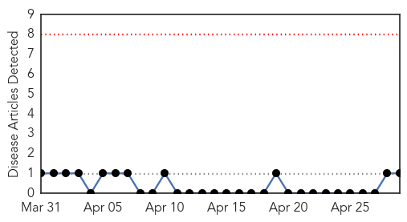
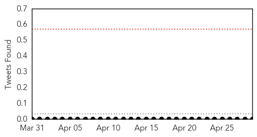

Hemmorhagic Fever
30-Day Web Trend
0 alerts, 0 warnings

30-Day Twitter Trend
0 alerts, 0 warnings

Article Locations

Article Confidences

Top Articles:
Top Tweets:
-
No tweets found for Apr 29, 2014
Ebola
30-Day Web Trend
0 alerts, 6 warnings

30-Day Twitter Trend
0 alerts, 0 warnings
Article Locations

Article Confidences

Top Articles:
- 0.999
- Awareness campaigns the key to halting outbreak
- 0.999
- Ghana, Business Advice, Jobs, News, Business Directory, Real Estate, Finance, Forms, Auto
- 0.959
- For the first time, Hong Kong Red Cross Volunteers work in response to Ebola Virus Outbreak in West Africa - Liberia
- 0.958
- Italy's False 'Ebola Outbreak' Is Spread by Racists and Conspiracy Nuts
- 0.508
- Senegal to reopen border with Guinea
Top Tweets:
-
No tweets found for Apr 29, 2014